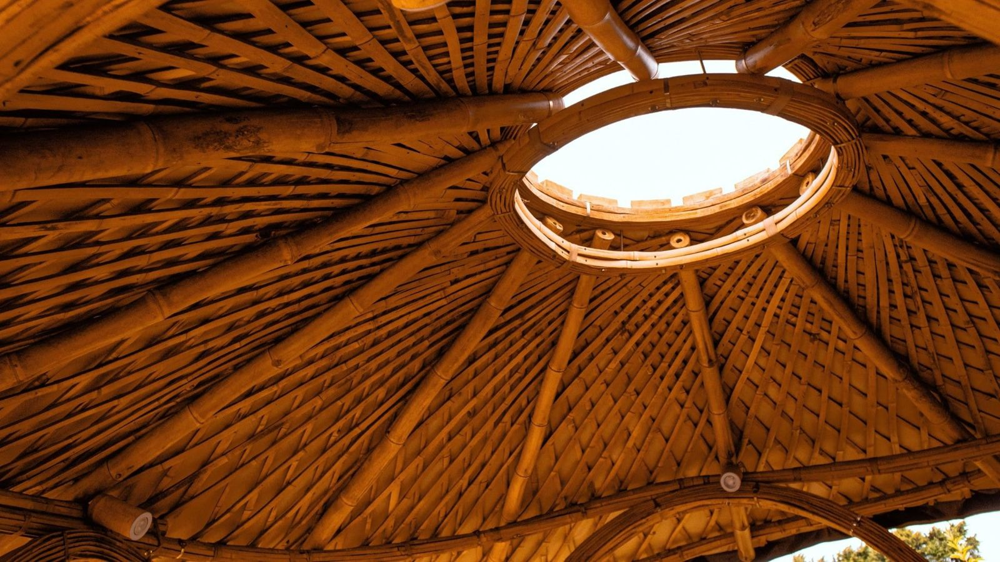

Terra + Bamboo
The best architecture
doesn't dominate the landscape.
It becomes part of it.
Bamboo and earth architecture & construction studio · Colombia
Tell us about your projectWorkshop in the guadua grove · drone view
Specialists in sustainable architecture, parametric design and construction with bamboo, earth and natural materials.
From homes to eco-hotels and tourism developments, we work alongside every project from the first idea to the finished building.



How we work
- 01
Living materials
Bamboo, earth and local resources chosen for their structural behaviour, environmental efficiency and natural beauty.
- 02
Digital precision
Parametric design, BIM modelling and 3D visualisation to get every decision right before we build.
- 03
Positive impact
Architecture that cuts emissions, uses what the site offers and creates spaces built to last for generations.
- 04
Learning by building
Sharing knowledge is also building. We run workshops, make precision models and work with communities to strengthen local skills.
About us
Teboo is a Colombian architecture and engineering studio specialised in sustainable construction.
Our practice combines research, material experimentation, digital fabrication and building know-how to create contemporary projects with natural materials.
We believe bamboo is not the past of construction but one of its greatest opportunities for the future.
Our philosophy
Architecture should respond to the climate, the land and the people who live in it. Every project starts with an analysis that combines bioclimatic design, structural efficiency and a deep understanding of natural materials.
We don't impose a form; we look for the smartest solution for each place.


Santiago Montoya
Architect

José Luis Chalco
Architect
Collaborators
Architects, designers and builders who join each project.
From sketch to site
Every form starts by observing something: a coffee bean, a firefly beetle, a turtle's shell.


Portfolio
On site
Drag to explore, click to enlarge.
Services
End-to-end services for high-quality sustainable architecture.
- Masterplanning & Eco Resorts
- We design complete sustainable tourism experiences, from site planning to the last architectural detail.
- Residential architecture
- One-of-a-kind homes adapted to the climate, the landscape and each client's way of life.
- Parametric design & 3D visualisation
- We turn complex ideas into precise projects with advanced digital tools.
- Specialised construction
- We build to high technical standards in bamboo, earth and other sustainable building systems.

Training
We share knowledge to change the way we build.
Through workshops, research and technical resources we want to help a new generation of architects and builders specialised in natural architecture.
- Natural-building workshops with guadua, on site and with communities.
- Precision model-making workshop.
Contact
Let's build something that leaves a positive mark.
Tell us your idea. We'd love to help you turn it into a sustainable, functional and lasting project.
Start a conversation now- WhatsApp +57 320 481 5569
- Email teboo.arch@gmail.com
- Instagram @teboo_arch